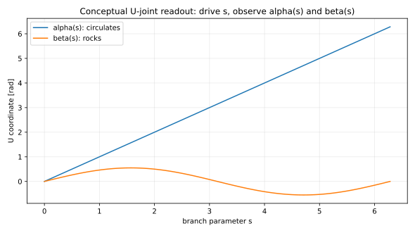

Active scientific sequence: docs/KINEMATIC_DECOMPOSITION_V05_V09_PROGRAM.md.
This readout is an optional interface scaffold subordinate to that program. It does not demote
the V05 scoped closed-mechanism gate or promote L5–L7 claims beyond accepted scope.
The common implementation contract is: construct the exact fixed-position source parent, introduce only enough task/redundancy level sets to obtain a one-dimensional source fiber, compress that fiber into a known closed mechanism only where equivalence is certified, solve the leaf, and reconstruct the parent task image from accepted fibers.
source open chain → fix Cartesian position → source parent of dimension m → impose m−1 justified scalar level sets → one-dimensional source fiber → candidate one-DOF closed-mechanism child → independent parent/child equivalence certificate → leaf continuation + winding/coverage → parent orientation/pointing reconstruction
| Rung | Source | Fixed-position mobility | Target | Task slices | Redundancy slices | Leaf construction |
|---|---|---|---|---|---|---|
L3 | planar 3R | 1 | SO(2) planar orientation | 0 | 0 | direct |
L4 | spatial 4R | 1 | specified one-parameter orientation family Y1 ⊂ SO(3) | 0 | 0 | direct |
L5 | spatial 5R | 2 | S^2 tool pointing | 1 | 0 | fiber family |
L6 | spatial 6R | 3 | SO(3) full orientation | 2 | 0 | fiber family |
L7 | spatial 7R | 4 | SO(3) orientation plus one-dimensional self-motion | 2 | 1 | fiber family |
Radius-level retrofit of the analytical planar 3R→4R result into shared ladder records.
EXACT_GLOBAL certifies the map at each radius; dexterity/rotatability remain
separate predicates. Process status stays SCAFFOLD. Active science remains
V05–V09.
| rho | assemblable | rotatable | dexterous | map certificate | predicate match |
|---|---|---|---|---|---|
0.0 | True | True | True | EXACT_GLOBAL | True |
1.0 | True | True | True | EXACT_GLOBAL | True |
2.0 | True | True | True | EXACT_GLOBAL | True |
3.5 | True | False | False | EXACT_GLOBAL | True |
Shared ladder records for the existing V05 independent closed-mechanism evidence.
Proximal exact_u_pair_4r is EXACT_ON_COMPONENT on the compared
component; generic architectures do not promote a child. Process stays
SCAFFOLD. Scientific source:
V05D readout.
| architecture | axis aggregation | closed mechanism | orientation curve | reconstruction | independent reduce |
|---|---|---|---|---|---|
exact_u_pair_4r | EXACT_GLOBAL | EXACT_ON_COMPONENT | NONTRIVIAL_POINTING_CURVE | EXACT_ON_COMPONENT | True |
generic_4r | REJECTED | UNRESOLVED | NONTRIVIAL_POINTING_CURVE | UNRESOLVED | False |
For L5, replacing the virtual spherical closure S_v by a task-derived
U_v on one regular pointing level set removes one degree of freedom.
Letter labels below are a candidate test corpus only: kinds and roles are recorded,
but axis aggregation and closed-mechanism statuses remain UNRESOLVED until
issued. Mobility/letter matching is not an equivalence certificate.
| Parent | M | Child | M | Architecture origin |
|---|---|---|---|---|
SUUR | 2 | UUUR | 1 | candidate 5R + S_v corpus entry assuming two physical RR→U aggregates followed by R (aggregation uncertified) |
SURU | 2 | UURU | 1 | candidate 5R + S_v corpus entry with U-R-U physical ordering |
SRUU | 2 | URUU | 1 | candidate 5R + S_v corpus entry with R-U-U physical ordering |
SSRR | 2 | USRR | 1 | candidate 5R + S_v corpus entry assuming one physical RRR→S aggregate followed by R-R (aggregation uncertified) |
SRSR | 2 | URSR | 1 | candidate 5R + S_v corpus entry with R-S-R physical ordering |
SRRS | 2 | URRS | 1 | candidate 5R + S_v corpus entry with R-R-S physical ordering |
The canonical child solver drives pseudo-arclength s. Loop closure returns
alpha(s), beta(s), and every other joint coordinate. A prescribed-alpha
experiment adds alpha=alpha_command as one equation and solves the remaining
coordinates; it fails as a local chart when dalpha/ds=0.
In the conceptual branch below, alpha winds once while beta rocks. They are still coordinates of one mechanism branch—not two independent mechanism DOFs.

Animation generation disabled for this run.
| Conceptual result | Value |
|---|---|
| alpha winding | 1 |
| beta winding | 0 |
| interpretation | alpha circulates while beta rocks |
exact_u_pair_4r closed-mechanism is
EXACT_ON_COMPONENT; multi-component / other architectures remain unresolved.axis_aggregation_status vs closed_mechanism_status (ADR-021).tool_alpha and tool_beta are readouts from the same leaf solve.source_chain_evidence only with a real accepted closed-mechanism certificate.